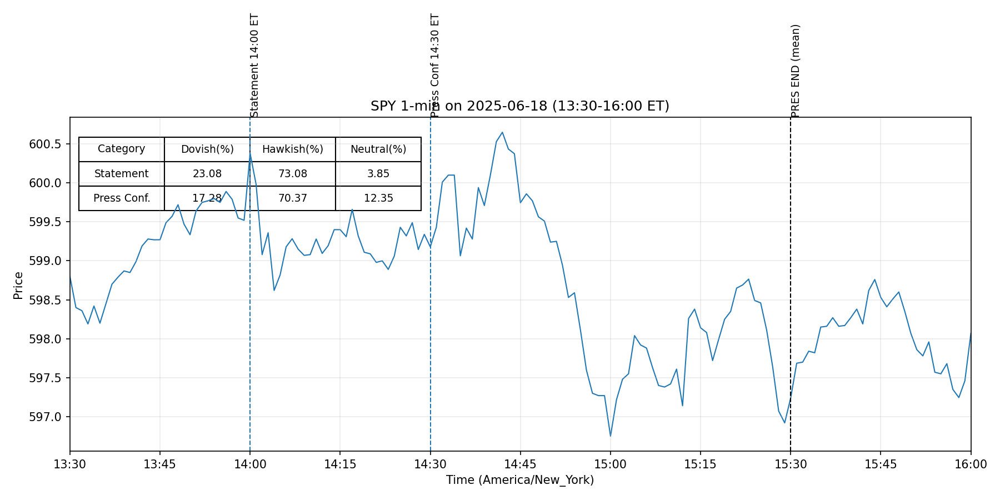
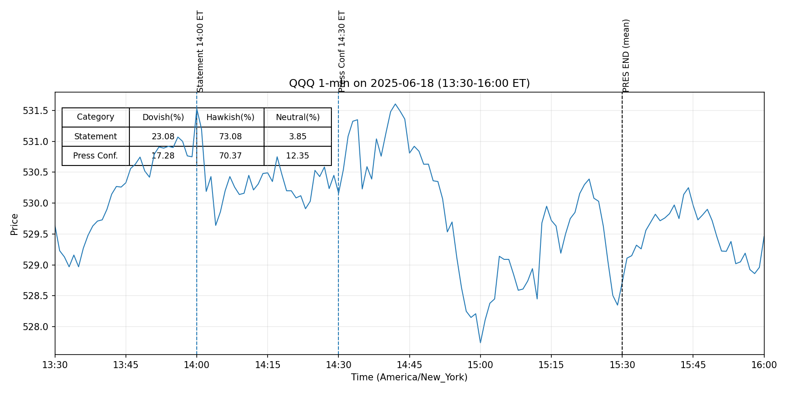

20250618



Inflation remains somewhat elevated. (old:0.551 new:0.551)
The Committee seeks to achieve maximum employment and inflation at the rate of 2 percent over the longer run. (old:0.612 new:0.612)
In support of its goals, the Committee decided to maintain the target range for the federal funds rate at 4-1/4 to 4-1/2 percent. (old:0.512 new:0.512)
In considering the extent and timing of additional adjustments to the target range for the federal funds rate, the Committee will carefully assess incoming data, the evolving outlook, and the balance of risks. (old:0.420 new:0.420)
The Committee will continue reducing its holdings of Treasury securities and agency debt and agency mortgage‑backed securities. (old:0.610 new:0.610)
The Committee is strongly committed to supporting maximum employment and returning inflation to its 2 percent objective. (old:0.551 new:0.551)
In assessing the appropriate stance of monetary policy, the Committee will continue to monitor the implications of incoming information for the economic outlook. (old:0.775 new:0.775)
The Committee would be prepared to adjust the stance of monetary policy as appropriate if risks emerge that could impede the attainment of the Committee’s goals. (old:0.721 new:0.721)
The Committee’s assessments will take into account a wide range of information, including readings on labor market conditions, inflation pressures and inflation expectations, and financial and international developments. (old:0.536 new:0.536)
-0- Attachment For media inquiries, please email media@frb.gov or call 202-452-2955. (old:0.646 new:0.646)
Redeem Treasury coupon securities up to this monthly cap and Treasury bills to the extent that coupon principal payments are less than the monthly cap. (old:0.398 new:0.398)
• In a related action, the Board of Governors of the Federal Reserve System voted unanimously to approve the establishment of the primary credit rate at the existing level of 4.5 percent. (old:0.559 new:0.559)
(more) -2- This information will be updated as appropriate to reflect decisions of the Federal Open Market Committee or the Board of Governors regarding details of the Federal Reserve's operational tools and approach used to implement monetary policy. (old:0.625 new:0.625)
More information regarding open market operations and reinvestments may be found on the Federal Reserve Bank of New York's website. (old:0.801 new:0.801)
For release at 2:00 p.m. EDT July 30, 2025 Although swings in net exports continue to affect the data, recent indicators suggest that growth of economic activity moderated in the first half of the year. (0.446)
The unemployment rate remains low, and labor market conditions remain solid. (0.402)
Uncertainty about the economic outlook remains elevated. (0.473)
The Committee is attentive to the risks to both sides of its dual mandate. (0.602)
(more) -2- Voting for the monetary policy action were Jerome H. Powell, Chair; John C. Williams, Vice Chair; Michael S. Barr; Susan M. Collins; Lisa D. Cook; Austan D. Goolsbee; Philip N. Jefferson; Alberto G. Musalem; and Jeffrey R. Schmid. (0.809)
Voting against this action were Michelle W. Bowman and Christopher J. Waller, who preferred to lower the target range for the federal funds rate by 1/4 percentage point at this meeting. (0.457)
Absent and not voting was Adriana D. Kugler. (0.627)
For release at 2:00 p.m. EDT July 30, 2025 Decisions Regarding Monetary Policy Implementation The Federal Reserve has made the following decisions to implement the monetary policy stance announced by the Federal Open Market Committee in its statement on July 30, 2025: • The Board of Governors of the Federal Reserve System voted unanimously to maintain the interest rate paid on reserve balances at 4.4 percent, effective July 31, 2025. (0.505)
• As part of its policy decision, the Federal Open Market Committee voted to direct the Open Market Desk at the Federal Reserve Bank of New York, until instructed otherwise, to execute transactions in the System Open Market Account in accordance with the following domestic policy directive: "Effective July 31, 2025, the Federal Open Market Committee directs the Desk to: (0.520)
Conduct standing overnight repurchase agreement operations with a minimum bid o rate of 4.5 percent and with an aggregate operation limit of $500 billion. (0.722)
Conduct standing overnight reverse repurchase agreement operations at an o offering rate of 4.25 percent and with a per-counterparty limit of $160 billion per day. (0.757)
Roll over at auction the amount of principal payments from the Federal Reserve's o holdings of Treasury securities maturing in each calendar month that exceeds a cap of $5 billion per month. (0.514)
Reinvest the amount of principal payments from the Federal Reserve's holdings of o agency debt and agency mortgage-backed securities (MBS) received in each calendar month that exceeds a cap of $35 billion per month into Treasury securities to roughly match the maturity composition of Treasury securities outstanding. (0.536)
Allow modest deviations from stated amounts for reinvestments, if needed for o operational reasons."" (0.774)
For release at 2:00 p.m. EDT June 18, 2025
Although swings in net exports have affected the data, recent indicators suggest that
economic activity has continued to expand at a solid pace. (0.409)
The unemployment rate remains low,
and labor market conditions remain solid. (0.402)
Uncertainty about the economic outlook has diminished but
remains elevated. (0.437)
The Committee is attentive to the risks to both sides of its dual mandate. (0.602)
(more)
-2-
Voting for the monetary policy action were Jerome H. Powell, Chair; John C. Williams,
Vice Chair; Michael S. Barr; Michelle W. Bowman; Susan M. Collins; Lisa D. Cook; Austan D.
Goolsbee; Philip N. Jefferson; Adriana D. Kugler; Alberto G. Musalem; Jeffrey R. Schmid; and
Christopher J. Waller. (0.804)
For release at 2:00 p.m. EDT June 18, 2025
Decisions Regarding Monetary Policy Implementation
The Federal Reserve has made the following decisions to implement the monetary policy stance
announced by the Federal Open Market Committee in its statement on June 18, 2025:
• The Board of Governors of the Federal Reserve System voted unanimously to maintain the
interest rate paid on reserve balances at 4.4 percent, effective June 20, 2025. (0.513)
• As part of its policy decision, the Federal Open Market Committee voted to direct the Open
Market Desk at the Federal Reserve Bank of New York, until instructed otherwise, to
execute transactions in the System Open Market Account in accordance with the following
domestic policy directive:
"Effective June 20, 2025, the Federal Open Market Committee directs the Desk to: (0.518)
o Conduct standing overnight repurchase agreement operations with a minimum bid
rate of 4.5 percent and with an aggregate operation limit of $500 billion. (0.728)
o Conduct standing overnight reverse repurchase agreement operations at an
offering rate of 4.25 percent and with a per-counterparty limit of $160 billion per
day. (0.756)
o Roll over at auction the amount of principal payments from the Federal Reserve's
holdings of Treasury securities maturing in each calendar month that exceeds a
cap of $5 billion per month. (0.513)
o Reinvest the amount of principal payments from the Federal Reserve's holdings of
agency debt and agency mortgage-backed securities (MBS) received in each
calendar month that exceeds a cap of $35 billion per month into Treasury
securities to roughly match the maturity composition of Treasury securities
outstanding. (0.545)
o Allow modest deviations from stated amounts for reinvestments, if needed for
operational reasons."" (0.765)